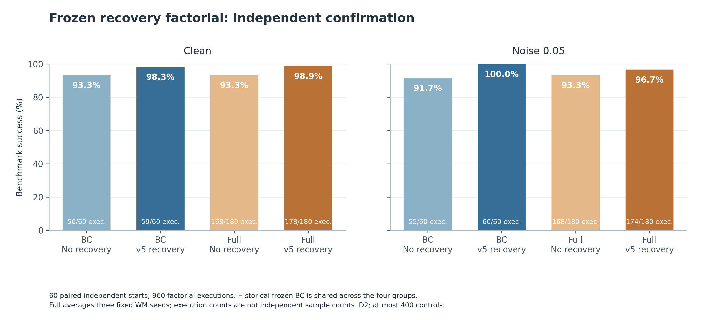
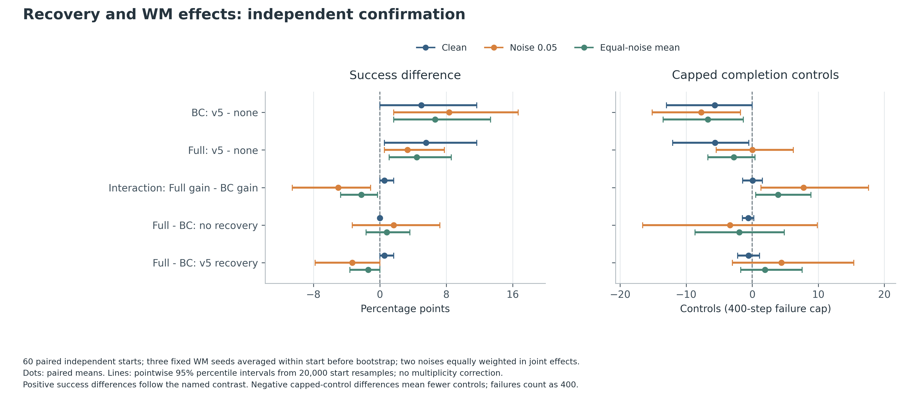
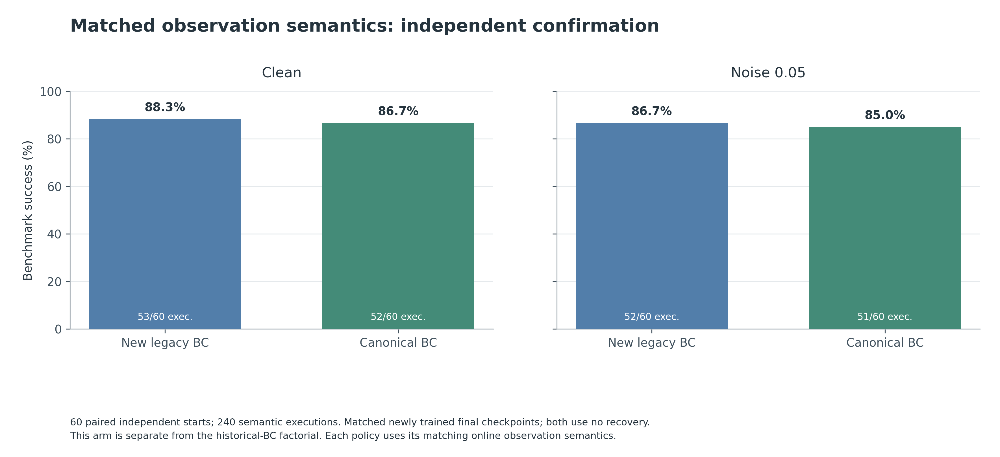
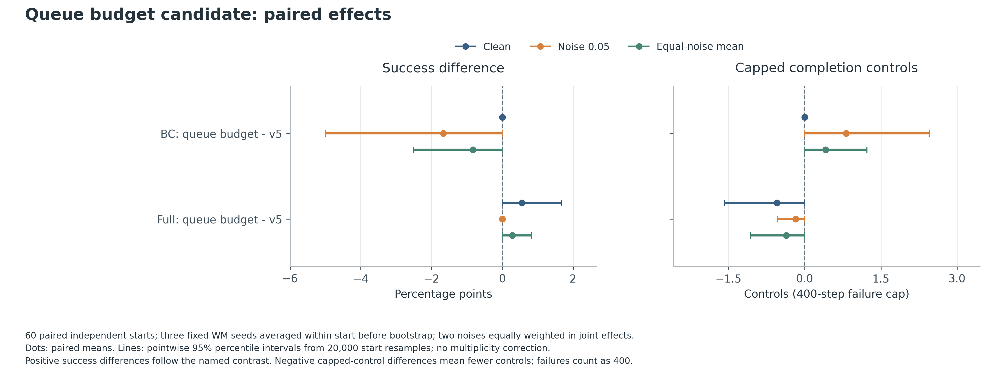

CAN LAB / 2026.10.22
修复有证据，改进有对照
统一离线与在线观测，保护历史代码、权重与结果，补齐同批恢复对照。360次开发、1680次确认；确认只有60个独立原生起点。本轮未写论文。
完整技术报告修复、效果与结论边界新活动代码安全入口与运行命令正式冻结v5保留原有研究主线历史v21探索失败与负结果保留
冻结策略的同批恢复实验
每格依次为干净 / 噪声0.05。Full每条件180次来自60起点×三个固定种子。
| 策略 | 无恢复 | v5恢复 | 队列预算候选 |
|---|
| BC固定权重 | 56/60 / 55/60 | 59/60 / 60/60 | 59/60 / 59/60 |
| Full三个固定种子 | 168/180 / 168/180 | 178/180 / 174/180 | 179/180 / 174/180 |
预算候选存在一次救回和一次退步，具体配对区间见本轮完整报告；本轮保留为未采用候选。
观测修复的独立差值：-1.67个百分点，95%区间[-11.67, 8.33]。完整区间、稳定性指标和限制见技术报告。

同批冻结策略恢复对照：60个独立起点
恢复作用与世界模型作用：按起点配对区间
匹配重训BC的观测语义确认，与旧BC分别统计
预算候选：保留零变化与负结果